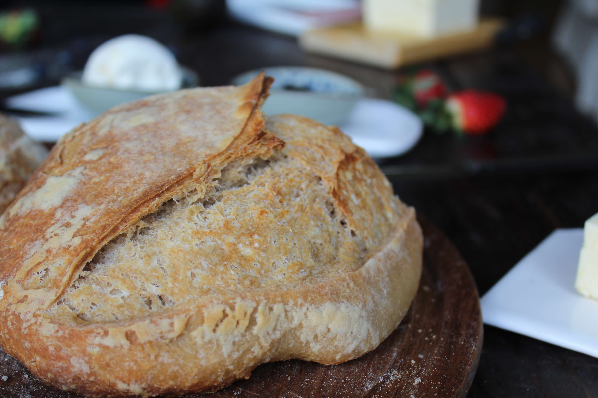
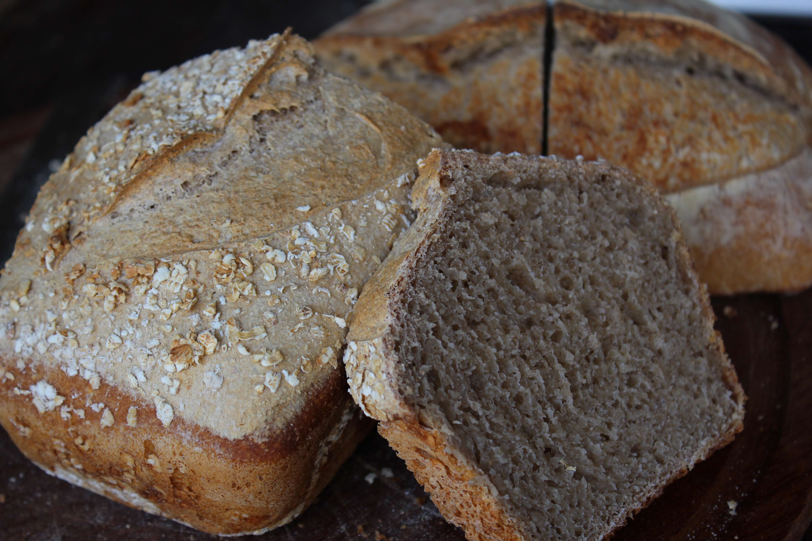
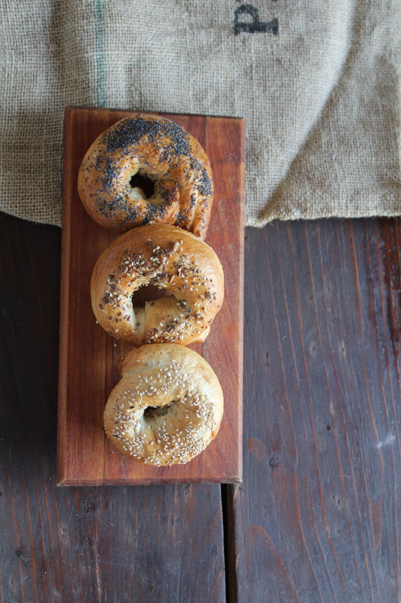
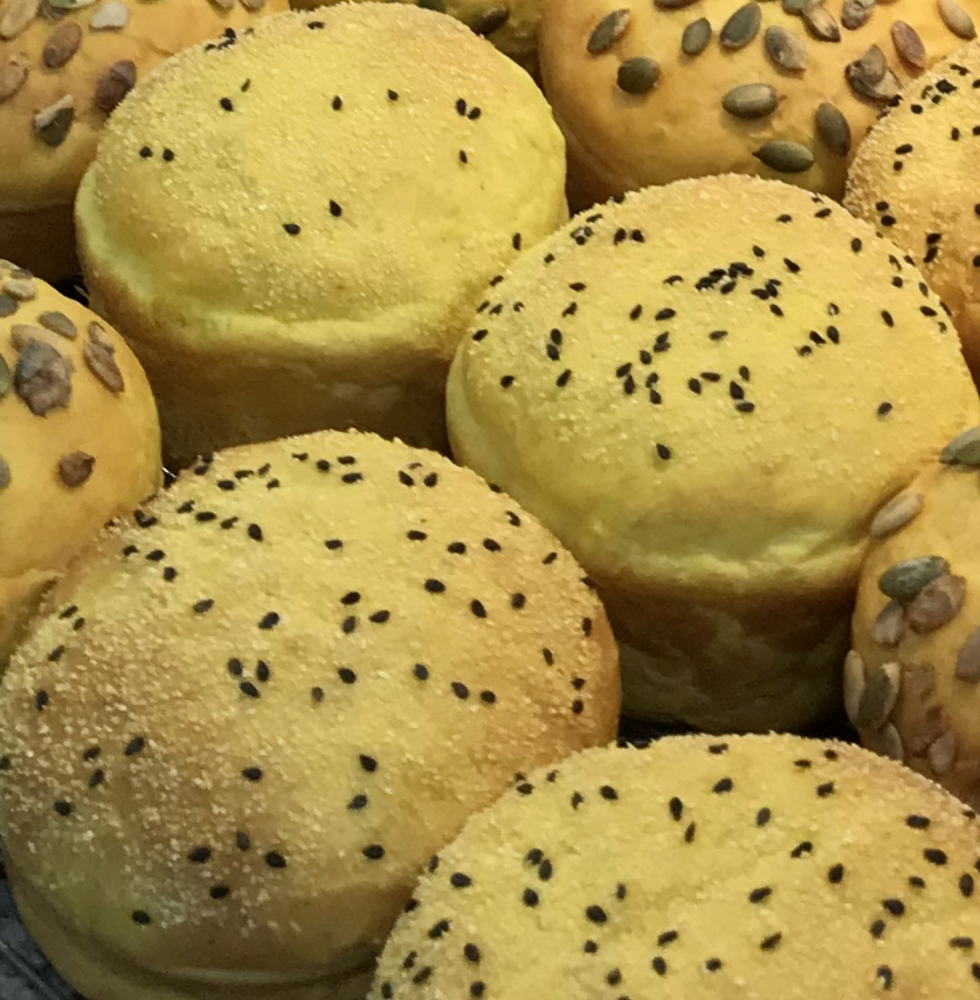
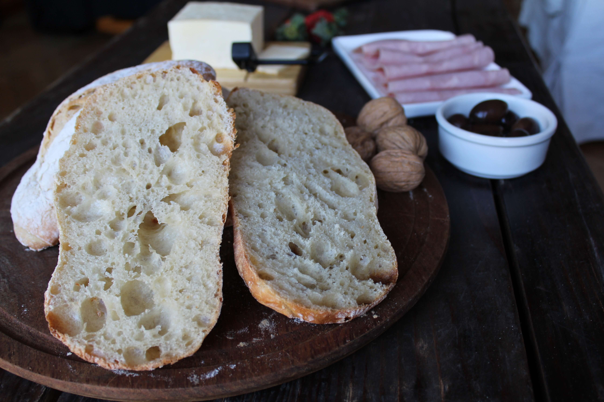
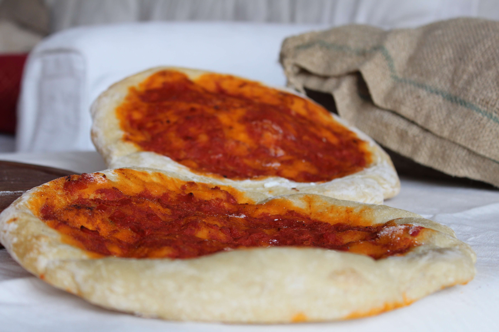
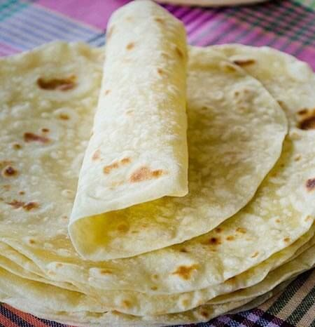
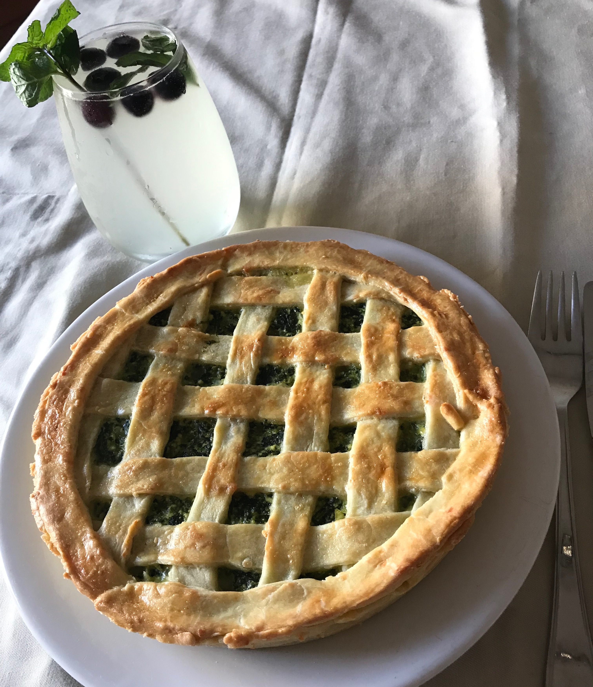

Panes

Pan de masa madre casero
- Pan rustico con harina 000, 10% de harina integral, sal marina y una larga fermentacion
- Con un toque acido, liviano y de miga aireada
- Perfecto para desayunos, brunch, picadas y acompanar comidas
Pan semi integral de masa madre
- Con una selección de harinas integrales organicas, harina 000, sal marina y aceite
- Con miga compacta, va muy bien tostado y en sandwiches


Pan de molde 100% integral
- Elaborado con mezcla de harinas integrales de trigo organicas, centeno, sal marina, masa madre
- Liviano, con mucha fibra y de miga cerrada. Ideal para desayuno, tostadas y tostados
Pan blanco de molde
- Pan blanco elaborado con leche, manteca, sal marina y una larga fermentacion
- No apto vegano
- Lacteado de harinas blancas, con miga cerrada y esponjosa ideal para tostadas y sandwiches


Bagels de masa madre
- Harina 000, masa madre, sal marina y semillas de sesamo o amapola
- Para sandwiches de vegetales, pollo, jamon o salmon acompanados de queso crema
Pan de hamburguesas
- Harina 000, masa madre y papa, cubiertos con semillas de sesamo y polenta
- Para hamburguesas o pulled pork


Ciabattas masa madre
- Harina 000, 10 % de harina integral, sal marina y oliva extra virgen
- Livianas, de miga aireada y crosta crocante, ideales para sandwiches
Prepizzas masa madre
- Harina 000, una larga fermentacion, sal marina y oliva extra virgen con salsa de tomate natural
- Aptas para veganos
- Para tener en el freezer y prepararlas en modo tradicional o acompanarlas con lo que quieras


Wrap de 100% sarraceno
- Trigo sarraceno activo con sal marina
- Apto vegano
- Para tener en el freezer, tienen mucha fibra y todas las propiedades del trigo sarraceno, para rellenar como quieras
Quiche lorraine
- Las originales tartas francesas de masa quebrada, individuales
- No aptas veganos, hechas con manteca, harina, crema de leche, un toque de masa madre, rellenas con verduras de estacion
- Solas o acompañadas de ensaladas son una excelente opcion
